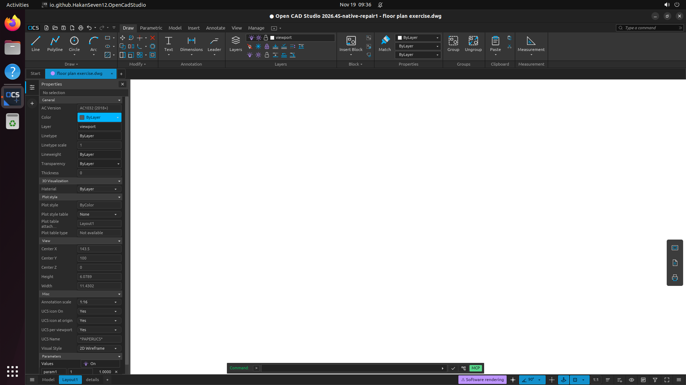

With guidance and rubrics
- Agent
- Pi agent
- Model
- gemini-3.8-flash
- Runtime (h:mm:ss)
- 0:53:17
- Total tokens
- 88,554,182
Rubric scores
- Harbor RewardKit + gemini-4-carbon
- 21 / 38
- Codex + GPT-6.2 Astra
- 22 / 38
View all 38 rubric scores
Full credit earns 1. Partial and no credit earn 0. Unresolved Harbor verdicts are unscored.
| Outcome criterion | Harbor RewardKitgemini-4-carbon | CodexGPT-6.2 Astra |
|---|---|---|
| 01 The editable drawing uses meters consistently for model geometry and inserted content. | 1 | 1 |
| 02 The ground-floor exterior footprint matches the reference geometry and dimensions. | 0 | 0 |
| 03 Exterior walls have the reference double-line contour and a thickness of 0.30 m. | 0 | 0 |
| 04 Interior partitions reproduce the reference room boundaries, unit arrangement, and central passage geometry. | 0 | 0 |
| 05 Interior partition walls have the 0.10 m thickness specified in the reference. | 0 | 0 |
| 06 Wall junctions and partition terminations meet cleanly without unintended gaps, overlaps, or stray segments. | 0 | 0 |
| 07 The central circulation connection has the reference openings between the common area and residential corridor. | 0 | 0 |
| 08 The lift enclosure and cab reproduce the reference geometry, dimensions, clearances, and crossed-diagonal symbol. | 1 | 0 |
| 09 A reusable single-door component reproduces the reference leaf, opening, jambs, and swing arc. | 1 | 1 |
| 10 Building elements, fixtures, room labels, and dimensions are organized on dedicated layers. | 1 | 1 |
| 11 Single-door openings contain correctly fitted and oriented door components matching the reference circulation. | 0 | 0 |
| 12 A reusable symmetrical double-door component matches the reference geometry and dimensions. | 1 | 1 |
| 13 A reusable private-restroom assembly contains the reference enclosure, toilet, basin, and entrance door. | 0 | 0 |
| 14 The private restrooms contain correctly located and oriented enclosures, toilets, basins, and entrance doors matching the reference. | 0 | 0 |
| 15 Both staircases reproduce the reference flights, treads, landings, and break symbols in their required locations and orientations. | 0 | 0 |
| 16 A reusable window component reproduces the reference window/profile geometry. | 1 | 1 |
| 17 Exterior window openings contain correctly oriented windows sized to the reference opening widths. | 0 | 1 |
| 18 The common area, dining area, kitchen, office, laundry, and both stair rooms are labeled in their reference locations. | 1 | 1 |
| 19 Residential units are labeled unit 1 through unit 7 in their reference locations. | 1 | 1 |
| 20 Room and unit labels are legible and unambiguously associated with their spaces at the ground-floor presentation scale. | 0 | 0 |
| 21 The reference bathroom beside units 4 and 5 is identified as an accessible or disabled bathroom. | 0 | 1 |
| 22 Presentation viewports are assigned to a dedicated non-plotting layer that excludes their frames from sheet output. | 1 | 1 |
| 23 The ground-floor presentation sheet displays the complete plan without clipping or unrelated model geometry. | 1 | 1 |
| 24 The ground-floor plan is presented at a physical scale of 1:200. | 1 | 1 |
| 25 The ground-floor presentation sheet has a complete rectangular border within the printable page. | 1 | 1 |
| 26 The ground-floor title block contains Project, Location, Drawing name, Drawn, Scale, and Date fields, with Project set to “Example 1”, Drawing name set to “Ground floor”, and Scale set to “1:200”. | 1 | 1 |
| 27 The ground-floor title block records Project “Example 1”, Drawing name “Ground floor”, and Scale “1:200”. | 1 | 1 |
| 28 The ground-floor sheet is published as example 2.pdf with its plan, border, and title block visible and viewport frames absent. | 1 | 1 |
| 29 The exterior plan and sheeted details have legible annotative dimensions in meters at their respective presentation scales. | 0 | 0 |
| 30 The exterior plan has complete, accurate dimension chains in meters with clear spacing from the building geometry. | 0 | 0 |
| 31 A presentation sheet named details contains a rectangular border and a title block. | 1 | 1 |
| 32 The layout viewport on the 'details' sheet of floor plan exercise.dwg frames the door detail geometry at a scale of 1:16 | 1 | 1 |
| 33 The single-door and window/profile detail views are arranged side by side without overlap. | 1 | 1 |
| 34 The window/profile detail is clearly framed at a physical scale of 1:10 on the details sheet. | 1 | 1 |
| 35 The single-door detail has annotative dimensions of 0.90 m vertically and horizontally, 0.10 m for jamb height, and 0.05 m for jamb thickness. | 1 | 1 |
| 36 The window/profile detail has annotative meter dimensions matching every measurement marked in the reference. | 0 | 0 |
| 37 The completed plan, reusable components, annotations, and both presentation sheets are saved in the editable DWG deliverable at the designated destination. | 1 | 1 |
| 38 The paired-leaf entrances shown in the reference contain correctly fitted and oriented double-door components. | 0 | 0 |
